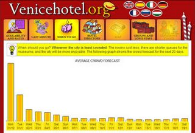

VeniceHotel.org offers an interesting online service: the crowd forecast. If you plan to visit Venice and your dates are flexible, then it's best to choose a time when the city is least crowded. The rooms cost less; there are shorter queues for the museums; and the city will be more enjoyable. The chart only forecasts the crowd for the next 20 days.